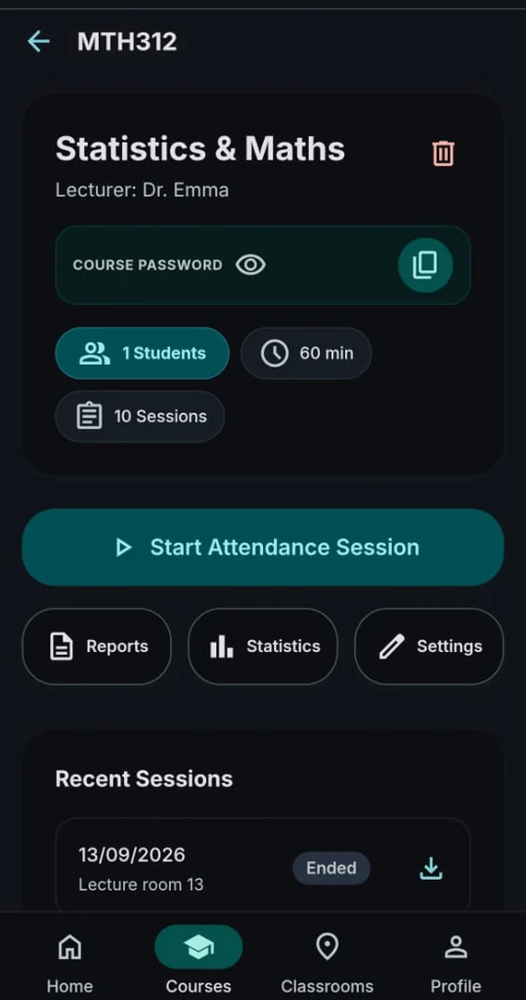
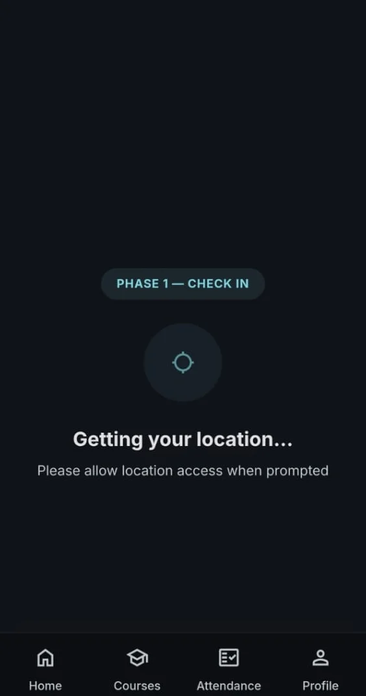
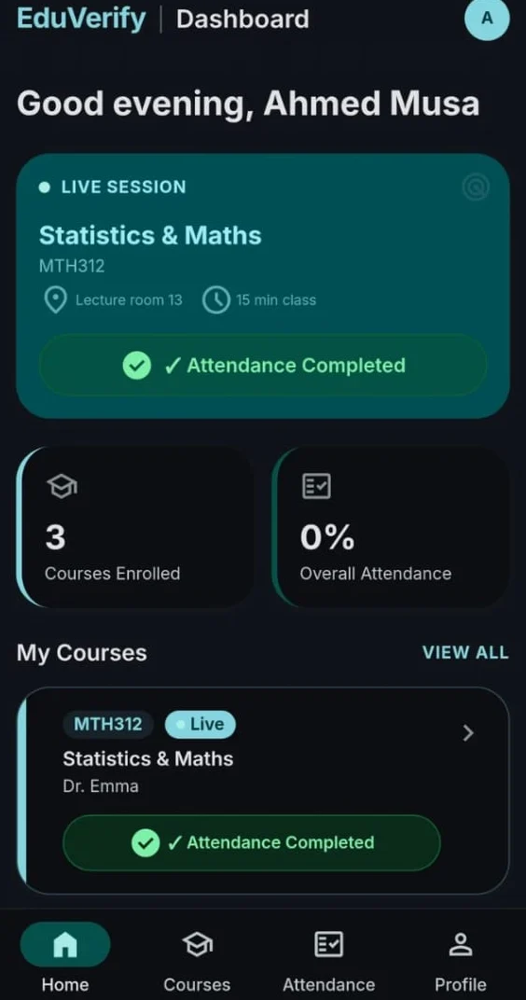
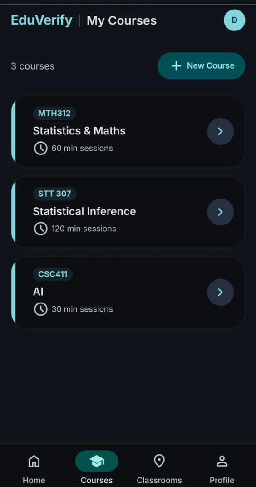
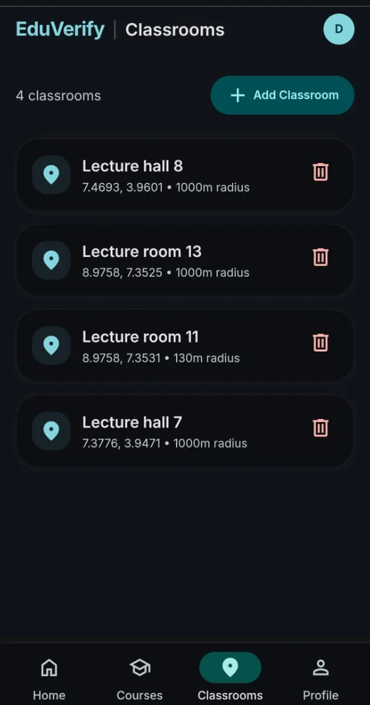
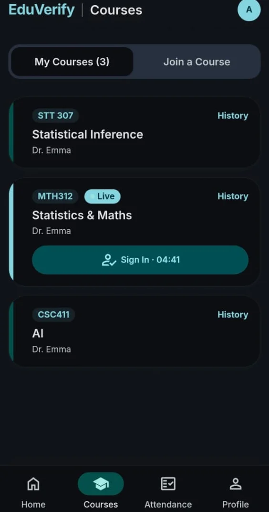

EduVerify
Attendance that can't be faked. Students must pass two independent checks, face and location, before they're marked present.



Signing in for a friend takes two seconds.
Paper registers get passed around. Most tap-to-sign-in apps only prove that someone pressed a button, not that the right student is actually in the room. Lecturers lose class time and still can't trust the numbers.
Prove who and prove where.
EduVerify asks for two independent proofs before it marks anyone present. A face match with liveness detection confirms identity, and a GPS geofence confirms the student is physically inside the classroom.
If either check fails, the attendance doesn't count.
Three steps,
under a minute
What a student sees when a lecturer starts a live session.
Am I in the room?
The app reads the student's GPS position and checks the Haversine distance to the classroom's geofence.

Is it really me?
A selfie runs through Facenet512 and MTCNN via DeepFace, with liveness detection to block photos of photos.
Marked present.
The record is written to Firestore in real time, and the lecturer's session updates instantly.

Built for lecturers
and students




Set up once, run every class
Create courses with join passwords, register classrooms by GPS coordinates and radius, start timed sessions and download reports.
Sign in with a live countdown
Join a course with a password, get a live sign-in window when class starts, and track your attendance history.
The stack
Designed and built solo with an AI-assisted workflow, from research and planning through to deployment.